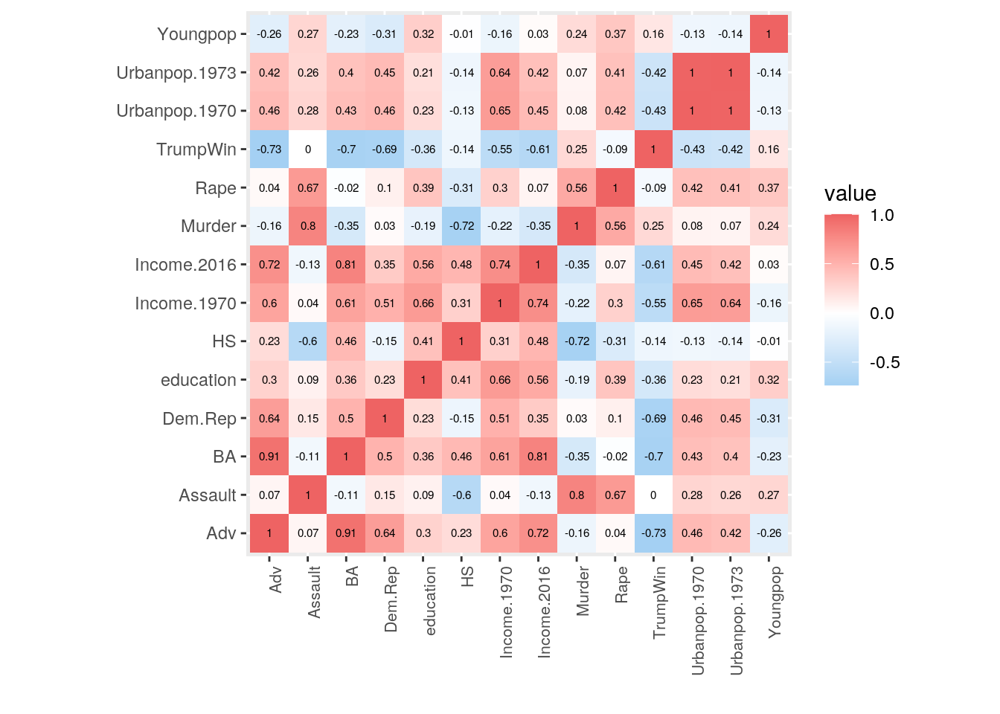
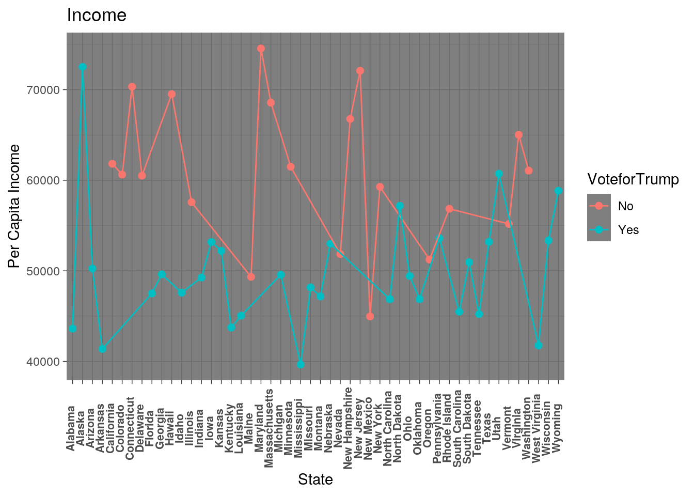
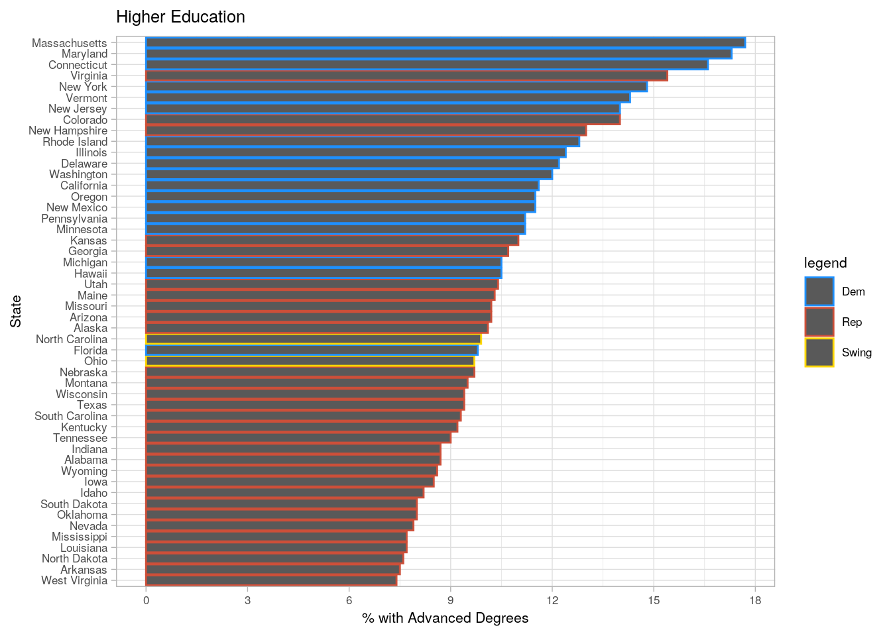
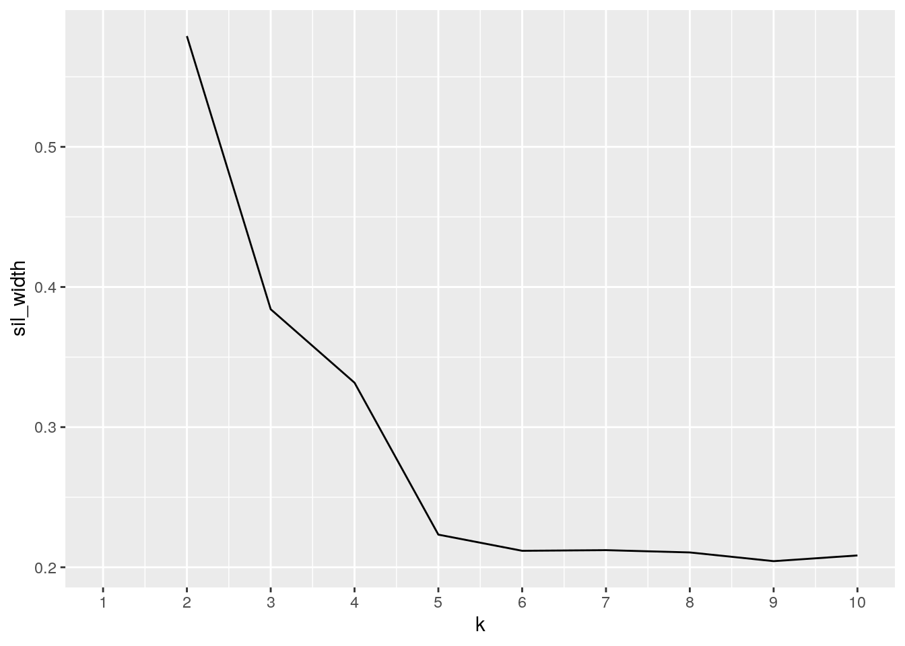
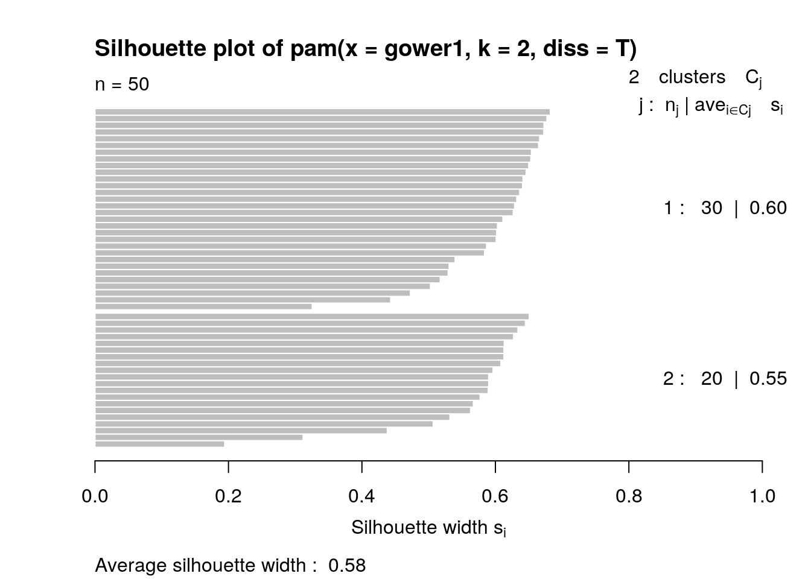
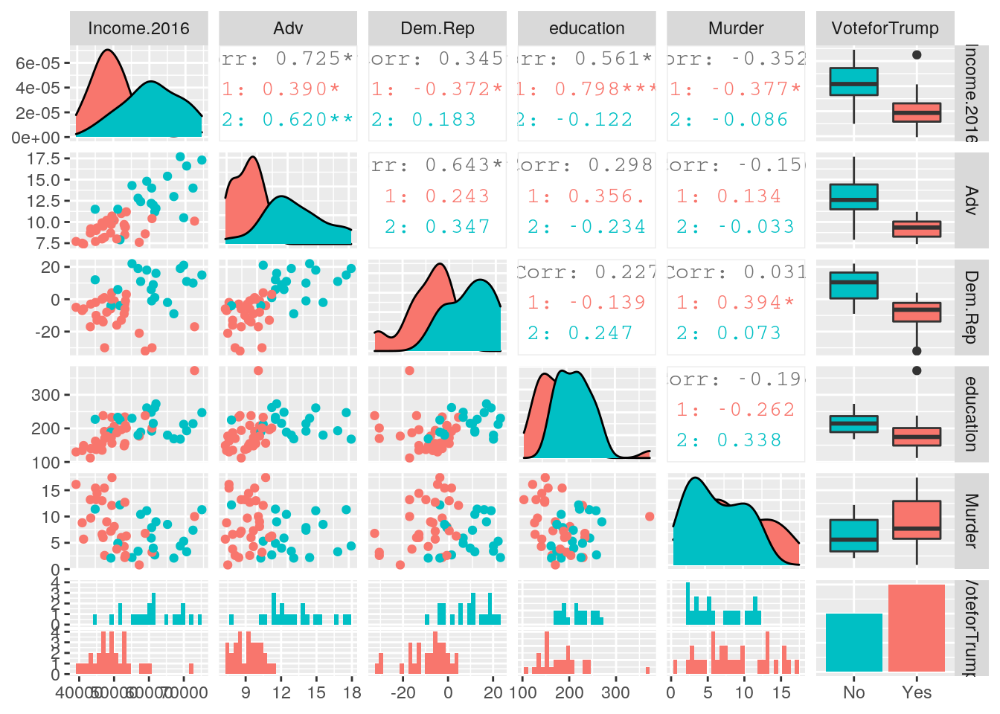

*Relations between the presidential elecction of 2016 and education and crime statistics in each state was analayzed. The dataset Election16 from Stat2Data records per capita income, percent of high school graduates, percent of college graduates and percent with advanced degrees in each state in addition to the whether the State leans toward the Democratic or Republican Party. This data was recorded by subtracting the percent of population that leans republican from the proprtion that leans toward the Democratic Party that was collected by a Gallup Poll in 2016. Finally, it also consists of the whether President Trump won the state.*
*The other dataset analyzed was Anscombe from the package carData which records public school expenditures by states in 1970. It contains the per capita education expenditure in dollars, per capita income in dollars, proportion of population that is under 18 per 1000 people and proportion of population that is urban per 1000 people. Additionally, because I was interested in correlation between crime and education, I joined the dataset USArrests from the package datasets. It records the arrests per 100,000 residents for murder, assault and rape in 1973 in addition to the percent of urban population in each state. I expected to see a relationship between states that voted for President Trump to have a higher income and less crime rates.*
# install.packages('carData')
library(carData)
Publicschool <- Anscombe
# install.packages('Stat2Data')
library(Stat2Data)
data("Election16")
# library(datasets)
USArrests <- USArrests
# install.packages('tidyverse')
library(tidyverse)The packages containing the datasets and additional packages to carry out different functions were installed and loaded.
Publicschool2 <- cbind(StateAbr = rownames(Anscombe), Anscombe)
rownames(Publicschool2) <- NULL
USArrests2 <- cbind(State = rownames(USArrests), USArrests)
rownames(USArrests2) <- NULL
# USArrests2 <- USArrests %>% select(-1)
Publicschool3 <- Publicschool2 %>% mutate(StateAbr2 = recode(StateAbr,
IO = "IA", KA = "KS"))
Publicschool4 <- Publicschool3 %>% select(-StateAbr)
Election16$State <- trimws(Election16$State, which = c("both"))
Fulldata <- Election16 %>% left_join(Publicschool4, by = c(Abr = "StateAbr2"))
Imnotokay <- Fulldata %>% left_join(USArrests2, by = c(State = "State"))
letitgo <- Imnotokay %>% rename(Income.1970 = income, Income.2016 = Income,
Urbanpop1970 = urban, Urbanpop.1973 = UrbanPop)
letitgo <- letitgo %>% mutate(Urbanpop.1970 = Urbanpop1970/10) %>%
select(-Urbanpop1970)
letitgo <- letitgo %>% mutate(Youngpop = young/10) %>% select(-young)The Publicschool dataset did not have the State abbreviations as a distinct variable, so it was converted to one and the orginal rownames was dropped. It also had different state abbreviations for Iowa and Kansas, so these were changed to match the Election16 dataset and the original state abbreviations were dropped. A left join was used to join Election16 and Publicschool4 together by state abbreviations. There were 8 variables in Election16 and 5 variables in Publicschool4 before the join. After the join, there are 12 variables in total. No variables were removed. A left join was done to keep all of the rows in Election16 and to add in variables from Publicschool4. Washington D.C was also recorded as a state, so that row was lost. However, the next dataset that was joined did not have data for the capital, so the loss was not significant. A right join was implemented to join the new dataset Fulldata with USArrests2 by the common variable State. There were 12 variables in Fulldata and 5 variables in USArrests2 before joining and 16 variables after joining. A left join was used. However since there are 50 states in both, it did not matter whether a left or right join was used.
letitgo <- letitgo %>% mutate(VoteforTrump = case_when(TrumpWin ==
0 ~ "No", TrumpWin == 1 ~ "Yes"))
letitgo <- letitgo %>% mutate(DemorRep = case_when(Dem.Rep >
0 ~ "Dem", Dem.Rep < 0 ~ "Rep", Dem.Rep == 0 ~ "Swing"))
letitgo %>% filter(TrumpWin == 1) %>% select(State, Murder, Assault,
Rape) %>% arrange(desc(Murder))## State Murder Assault Rape
## 1 Georgia 17.4 211 25.8
## 2 Mississippi 16.1 259 17.1
## 3 Florida 15.4 335 31.9
## 4 Louisiana 15.4 249 22.2
## 5 South Carolina 14.4 279 22.5
## 6 Alabama 13.2 236 21.2
## 7 Tennessee 13.2 188 26.9
## 8 North Carolina 13.0 337 16.1
## 9 Texas 12.7 201 25.5
## 10 Michigan 12.1 255 35.1
## 11 Alaska 10.0 263 44.5
## 12 Kentucky 9.7 109 16.3
## 13 Missouri 9.0 178 28.2
## 14 Arkansas 8.8 190 19.5
## 15 Arizona 8.1 294 31.0
## 16 Ohio 7.3 120 21.4
## 17 Indiana 7.2 113 21.0
## 18 Wyoming 6.8 161 15.6
## 19 Oklahoma 6.6 151 20.0
## 20 Pennsylvania 6.3 106 14.9
## 21 Kansas 6.0 115 18.0
## 22 Montana 6.0 109 16.4
## 23 West Virginia 5.7 81 9.3
## 24 Nebraska 4.3 102 16.5
## 25 South Dakota 3.8 86 12.8
## [ reached 'max' / getOption("max.print") -- omitted 5 rows ]letitgo %>% filter(TrumpWin == 0) %>% select(State, Murder, Assault,
Rape) %>% arrange(desc(Murder))## State Murder Assault Rape
## 1 Nevada 12.2 252 46.0
## 2 New Mexico 11.4 285 32.1
## 3 Maryland 11.3 300 27.8
## 4 New York 11.1 254 26.1
## 5 Illinois 10.4 249 24.0
## 6 California 9.0 276 40.6
## 7 Virginia 8.5 156 20.7
## 8 Colorado 7.9 204 38.7
## 9 New Jersey 7.4 159 18.8
## 10 Delaware 5.9 238 15.8
## 11 Hawaii 5.3 46 20.2
## 12 Oregon 4.9 159 29.3
## 13 Massachusetts 4.4 149 16.3
## 14 Washington 4.0 145 26.2
## 15 Rhode Island 3.4 174 8.3
## 16 Connecticut 3.3 110 11.1
## 17 Minnesota 2.7 72 14.9
## 18 Vermont 2.2 48 11.2
## 19 Maine 2.1 83 7.8
## 20 New Hampshire 2.1 57 9.5letitgo %>% select(State, DemorRep, TrumpWin, Income.2016) %>%
mutate(income4tile = ntile(Income.2016, 4)) %>% arrange(income4tile)## State DemorRep TrumpWin Income.2016 income4tile
## 1 Alabama Rep 1 43623 1
## 2 Arkansas Rep 1 41371 1
## 3 Florida Dem 1 47507 1
## 4 Kentucky Rep 1 43740 1
## 5 Louisiana Rep 1 45047 1
## 6 Mississippi Rep 1 39665 1
## 7 Montana Rep 1 47169 1
## 8 New Mexico Dem 0 44963 1
## 9 North Carolina Swing 1 46868 1
## 10 Oklahoma Rep 1 46879 1
## 11 South Carolina Rep 1 45483 1
## 12 Tennessee Rep 1 45219 1
## 13 West Virginia Rep 1 41751 1
## 14 Arizona Rep 1 50255 2
## 15 Georgia Rep 1 49620 2
## 16 Idaho Rep 1 47583 2
## 17 Indiana Rep 1 49255 2
## 18 Kansas Rep 1 52205 2
## 19 Maine Rep 0 49331 2
## 20 Michigan Dem 1 49576 2
## [ reached 'max' / getOption("max.print") -- omitted 30 rows ]letitgo %>% group_by(VoteforTrump) %>% summarize(mean_advdegrees_toHSdegrees = mean(Adv/HS,
na.rm = T))## # A tibble: 2 x 2
## VoteforTrump mean_advdegrees_toHSdegrees
## <chr> <dbl>
## 1 No 0.147
## 2 Yes 0.105letitgo %>% group_by(DemorRep) %>% summarise(meaneducation = mean(education),
meanmurder = mean(Murder), meanassault = mean(Assault), meanrape = mean(Rape))## # A tibble: 3 x 5
## DemorRep meaneducation meanmurder meanassault meanrape
## <chr> <dbl> <dbl> <dbl> <dbl>
## 1 Dem 221. 7.25 187. 22.5
## 2 Rep 182. 7.95 157. 20.6
## 3 Swing 164. 10.2 228. 18.8letitgo %>% group_by(VoteforTrump) %>% summarize(mean(education,
na.rm = T), n())## # A tibble: 2 x 3
## VoteforTrump `mean(education, na.rm = T)` `n()`
## <chr> <dbl> <int>
## 1 No 215. 20
## 2 Yes 182. 30letitgo %>% group_by(DemorRep) %>% summarize(median(Youngpop,
na.rm = T))## # A tibble: 3 x 2
## DemorRep `median(Youngpop, na.rm = T)`
## <chr> <dbl>
## 1 Dem 34.5
## 2 Rep 36.1
## 3 Swing 35.4letitgo %>% group_by(VoteforTrump) %>% summarise(maxmurder = max(Murder),
maxassault = max(Assault), maxrape = max(Rape))## # A tibble: 2 x 4
## VoteforTrump maxmurder maxassault maxrape
## <chr> <dbl> <int> <dbl>
## 1 No 12.2 300 46
## 2 Yes 17.4 337 44.5letitgo %>% summarize_if(is.numeric, .funs = list(mean = mean,
median = median, sd = sd, max = max, min = min, var = var),
na.rm = T) %>% pivot_longer(contains("_")) %>% separate(name,
into = c("Variable", "Statistics"), sep = "_", convert = T) %>%
pivot_wider(names_from = "Variable", values_from = "value") %>%
arrange(Statistics)## # A tibble: 6 x 15
## Statistics Income.2016 HS BA Adv Dem.Rep TrumpWin education
## <chr> <dbl> <dbl> <dbl> <dbl> <dbl> <dbl> <dbl>
## 1 max 74551 92.8 40.5 17.7 22 1 372
## 2 mean 54312. 88.2 29.0 10.7 -2.06 0.6 195.
## 3 median 52601 88.8 28.2 10.2 -2.5 1 192.
## 4 min 39665 81.8 19.2 7.4 -32 0 112
## 5 sd 8950. 3.09 4.93 2.60 13.0 0.495 46.4
## 6 var 80094071. 9.55 24.3 6.76 169. 0.245 2151.
## # … with 7 more variables: Income.1970 <dbl>, Murder <dbl>, Assault <dbl>,
## # Urbanpop.1973 <dbl>, Rape <dbl>, Urbanpop.1970 <dbl>, Youngpop <dbl>In the 2016 Presidential election, 30 states voted for Trump and had a mean public school expenditure of $181.97 per person.20 States did not vote for PResident Trump and the average public school expenditure in those states was $215.35. The mean proportion of people who graduated high school who also went on to purse an advanced degree in the states that voted for President Trump was 14.7% and those states that did not vote for President Trump had a mean proportion of 10.5%. Democratic states also spend more on public school education with an average of $220.94 per person. Republican states had an average mean of $182.07.
*Based on income, 12 out of 13 states in the first quantile for income per capita in 2016 voted for President Trump whereas 2 out 12 states in 4th income quantile voted for President Trump. The republican state that had the most arrests for murder in 1970 was Georgia with 17.4 arrests per 100,000 people. It also had 211 arrests for assault and 25.8 arrests for rape. The democratic state that had the most arrests for murder was Nevada with 12.2 arrests. Nevada also had 252 arrests for assault and 46 arrests for rape. In states that did not vote for President Trump, the max number of arrests for murder, assault and rape was 12.2, 300 and 46 respectively. In states that voted for President Trump, the max number of arrests for murder, assault and rape was 17.4, 337 and 44.5 respectively. Pivot_longer was used to collapse the long lost of summary statistics into rows. It was then separated on the basis of the "_" present into the name of the variable and summary statistic. Pivot_wider was used last to elongate the rows into columns inputting the values. *
cors <- letitgo %>% select_if(is.numeric) %>% cor()
cors %>% as.data.frame %>% rownames_to_column %>% pivot_longer(-1) %>%
na.omit %>% ggplot(aes(rowname, name, fill = value)) + geom_tile() +
geom_text(aes(label = round(value, 2)), size = 2) + xlab("") +
ylab("") + coord_fixed() + theme(axis.text.x = element_text(angle = 90,
hjust = 1, size = 8)) + scale_fill_gradient2(low = "skyblue2",
high = "indianred2")
letitgo %>% ggplot(aes(x = State, y = Income.2016, color = VoteforTrump)) +
geom_point(size = 2) + geom_line(aes(group = VoteforTrump)) +
theme_dark() + theme(axis.text.x = element_text(angle = 90,
vjust = 0.2, size = 8, face = "bold")) + xlab("State") +
ylab("Per Capita Income") + ggtitle("Income")
letitgo %>% ggplot(aes(x = reorder(State, Adv), y = Adv, color = DemorRep)) +
geom_bar(stat = "summary") + coord_flip() + theme_light() +
theme(text = element_text(size = 8)) + scale_color_manual("legend",
values = c(Dem = "dodgerblue1", Swing = "gold1", Rep = "tomato3")) +
scale_y_continuous(n.breaks = 7) + xlab("State") + ylab("% with Advanced Degrees") +
ggtitle("Higher Education") There is 0.91 correlation between percent of people who received a bachelor's degree and an advanced degree. There is also a strong postive correlation between percent of people who obtained advanced degrees, bachelor degrees and high school diplomas with per capita income in 2016. There's also a negative correlation between States won by President Trump and percent of people who obtained bachelors and advanced degrees and per capita income in 2016. The amount of money spend on public school students is correlated with income in 1970 with a coefficient of 0.6 and with income in 2016 with a coefficient of 0.56. Furthermore, a higher urban population correlates with a higher income in 1970. Arrests for assault and murder are correlated with arrests for murder. Additionally, murder is negatively correlated with percent of students who graduated high school with a coefficient of -0.70.
In the second graph, States with a higher income per capita did not vote for President Trump whereas States who had relatively less income per capita voted for Trump. In the third graph, States that had a higher proprtion of the population with advanced degrees leaned politically towards the Democratic Party whereas those states with a lesser percent of people with advanced degreed leaned Republican.
# install.packages('cluster')
library(cluster)
dat2 <- letitgo %>% mutate_if(is.character, as.factor) %>% column_to_rownames("State") %>%
select(-Abr, -TrumpWin, -DemorRep, -Income.1970, -Urbanpop.1973,
-HS, -Rape, -Assault, -BA, -Youngpop, -Urbanpop.1970)
gower1 <- daisy(dat2, metric = "gower")
sil_width <- vector()
for (i in 2:10) {
pam_fit <- pam(gower1, diss = TRUE, k = i)
sil_width[i] <- pam_fit$silinfo$avg.width
}
ggplot() + geom_line(aes(x = 1:10, y = sil_width)) + scale_x_continuous(name = "k",
breaks = 1:10)
pam3 <- pam(gower1, k = 2, diss = T) #tell pam you are using dissimilarities
pam3## Medoids:
## ID
## [1,] "14" "Indiana"
## [2,] "47" "Washington"
## Clustering vector:
## Alabama Alaska Arizona Arkansas California
## 1 1 1 1 2
## Colorado Connecticut Delaware Florida Georgia
## 2 2 2 1 1
## Hawaii Idaho Illinois Indiana Iowa
## 2 1 2 1 1
## Kansas Kentucky Louisiana Maine Maryland
## 1 1 1 2 2
## Massachusetts Michigan Minnesota Mississippi Missouri
## 2 1 2 1 1
## Montana Nebraska Nevada New Hampshire New Jersey
## 1 1 2 2 2
## New Mexico New York North Carolina North Dakota Ohio
## 2 2 1 1 1
## Oklahoma Oregon Pennsylvania Rhode Island South Carolina
## 1 2 1 2 1
## South Dakota Tennessee Texas Utah Vermont
## 1 1 1 1 2
## Virginia Washington West Virginia Wisconsin Wyoming
## 2 2 1 1 1
## Objective function:
## build swap
## 0.1369335 0.1292274
##
## Available components:
## [1] "medoids" "id.med" "clustering" "objective" "isolation"
## [6] "clusinfo" "silinfo" "diss" "call"plot(pam3, which = 2)
gower1 %>% as.matrix %>% as.data.frame %>% rownames_to_column %>%
pivot_longer(-1, values_to = "distance") %>% filter(rowname !=
name) %>% filter(distance %in% c(min(distance), max(distance))) %>%
distinct(distance, .keep_all = T)## # A tibble: 2 x 3
## rowname name distance
## <chr> <chr> <dbl>
## 1 Idaho Maryland 0.718
## 2 South Carolina Tennessee 0.0351dat2 %>% mutate(cluster = pam3$clustering) %>% group_by(cluster) %>%
rename_all(function(x) str_replace(x, "_", "")) %>% summarize_if(is.numeric,
.funs = list(mean = mean, median = median, sd = sd), na.rm = T) %>%
pivot_longer(contains("_")) %>% separate(name, sep = "_",
into = c("variable", "stat")) %>% pivot_wider(names_from = "variable",
values_from = "value") %>% arrange(stat)## # A tibble: 6 x 7
## cluster stat Income.2016 Adv Dem.Rep education Murder
## <int> <chr> <dbl> <dbl> <dbl> <dbl> <dbl>
## 1 1 mean 49899. 9.19 -9.3 182. 8.66
## 2 2 mean 60931. 13.0 8.8 215. 6.48
## 3 1 median 49342 9.35 -6.5 174. 7.7
## 4 2 median 60846. 12.6 10.5 214. 5.6
## 5 1 sd 6571. 1.11 9.65 49.9 4.69
## 6 2 sd 7988. 2.49 9.35 32.2 3.52dat2 %>% mutate(cluster = factor(pam3$clustering)) %>% select(cluster,
VoteforTrump) %>% group_by(cluster, VoteforTrump) %>% summarize(n = n()) %>%
mutate(prop = n/sum(n, na.rm = T)) %>% pivot_wider(-n, names_from = VoteforTrump,
values_from = prop)## # A tibble: 2 x 3
## # Groups: cluster [2]
## cluster Yes No
## <fct> <dbl> <dbl>
## 1 1 1 NA
## 2 2 NA 1letitgo %>% slice(pam3$id.med)## State Abr Income.2016 HS BA Adv Dem.Rep TrumpWin education
## 1 Indiana IN 49255 87.8 24.1 8.7 -6 1 194
## 2 Washington WA 61062 90.4 32.9 12.0 9 0 215
## Income.1970 Murder Assault Urbanpop.1973 Rape Urbanpop.1970 Youngpop
## 1 3412 7.2 113 65 21.0 64.9 35.93
## 2 3688 4.0 145 73 26.2 72.6 34.13
## VoteforTrump DemorRep
## 1 Yes Rep
## 2 No Demlibrary(GGally)
ggpairs(dat2, aes(color = as.factor(pam3$clustering)))
Categorical and numeric variables were used in Pam analysis. Therefore, a gower metric was used to calculate the similarities. Some columns were dropped because it was difficult to analyze the visualization graph with multiple variables present. The removal of variables were determined such that the silhouette width was closer to a reasonable structure. Using silhouette width is highest when k=2, so 2 clusters were chosen. Pam was then run. A silhouette width of 0.58 was observed which tells us that there could be a reasonable structure present, however it as at the low border of the values.
Next, the states closest in distance were determined. South Carolina and Tennessee are closest to each other, whereas Idaho and Maryland are furthest in similarities between each other. Computing summary statistics based on the clusters, cluster 1 had the lower percent of advanced degrees, less money spend on public school expenditure and had more arrests for murder. Next, the proportion of categoric variables present in each cluster was analyzed. Cluster 1 constituted wholly of States that voted for President Trump and cluster 2 included states that did not vote for President Trump. From the graph, the clusters can be differentiated for proportion of people with advanced degrees, by per capita income in 2016 and states who leaned toward Republican and Democratic parties. This makes sense as we saw a stronger correlation between these variables earlier.